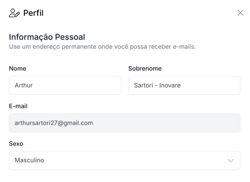

Suas informações pessoais ajudam a manter sua conta segura e personalizada.
Aqui você pode atualizar seu nome, e-mail e outras informações básicas para garantir que nossa comunicação seja feita corretamente e que suas preferências sejam respeitadas.